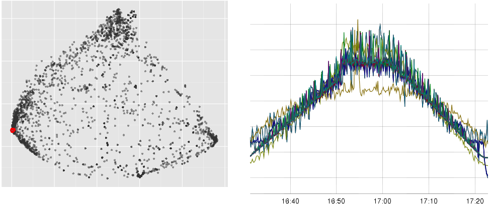
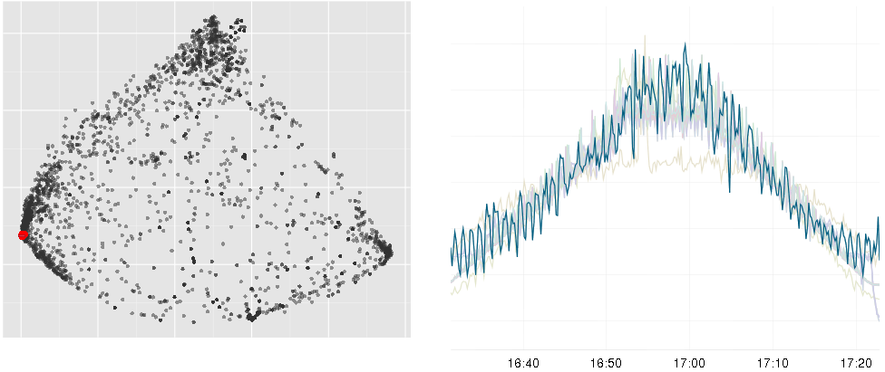
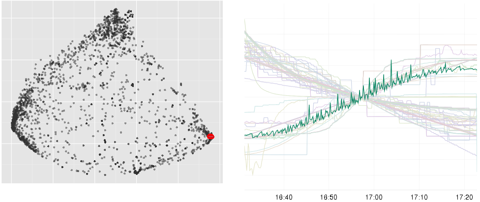
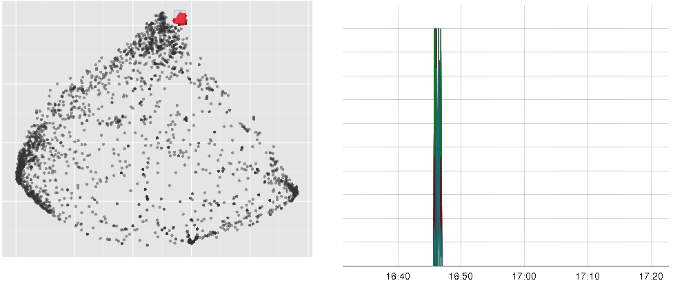
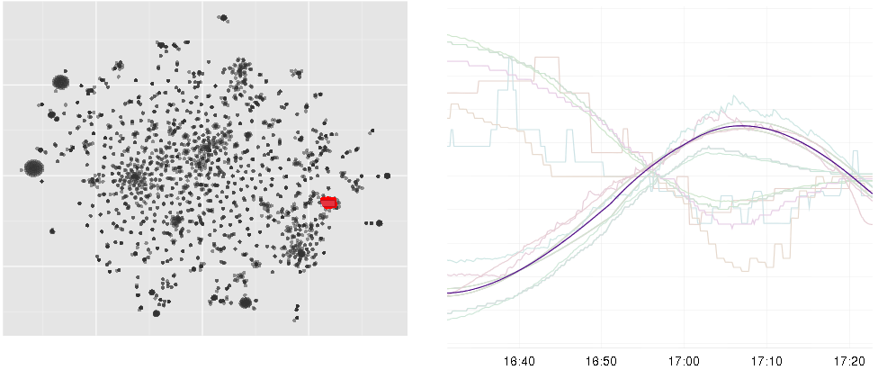
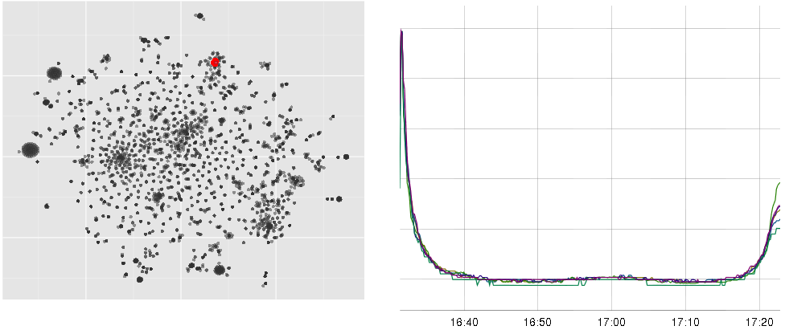
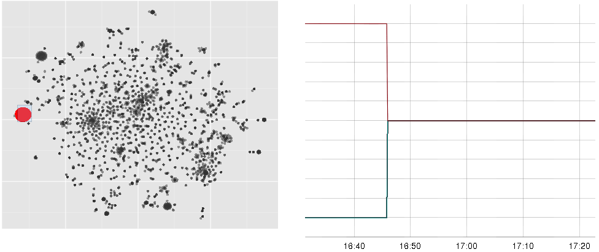
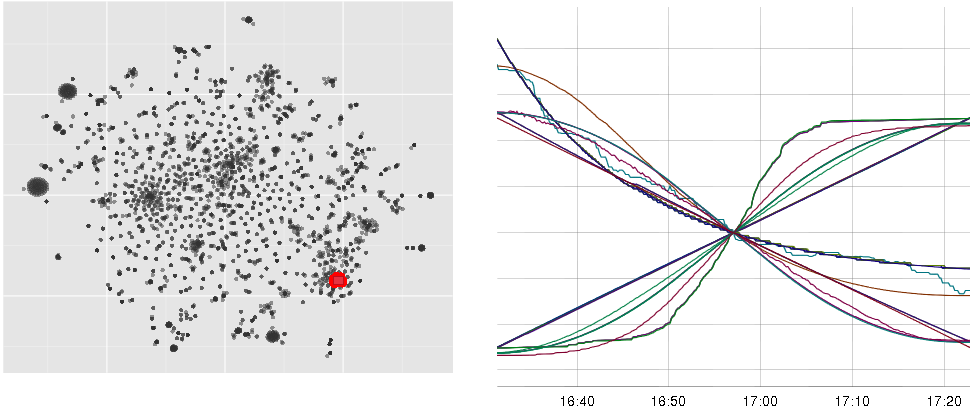
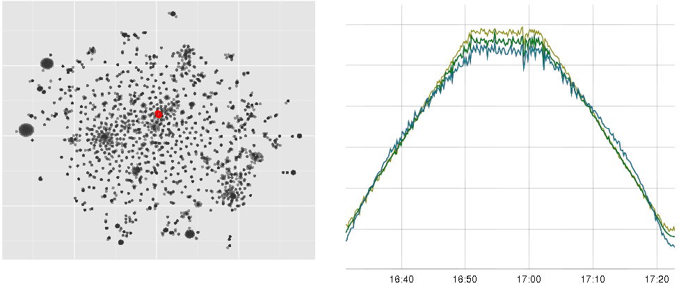
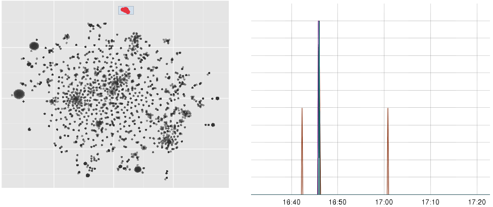

Visual Exploration of Time Series in R
© 2015 Anton Lebedevich
About Me
Anton Lebedevich
- server-side developer for highload projects
- debugging distributed performance problems
- started analysing performance metrics and loved stats
blog about monitoring and time series mabrek.github.io
Agenda
Typical Load Test
simulated clientsResults

Latencies

and 32000 more time series to find error causes
but they are silent or quite similar to each other
SVD
wikipedia.org/wiki/Singular_value_decomposition
$ \mathbf{X} = \mathbf{U}\mathbf{D}\mathbf{V}^* $
SVD U

SVD D

PCA
wikipedia.org/wiki/Principal_component_analysis
$ \mathbf{T} = \mathbf{X}\mathbf{V} $
$ \mathbf{T} = \mathbf{U}\mathbf{D} $
SVD V or PCA loadings

SVD and PCA
- relatively fast fortran implementation (but still $ O(n^2) $)
- results make sense (most common shapes), but not always
- sensitive to outliers
- unclear how to scale data
MDS
wikipedia.org/wiki/Multidimensional_scaling
function cmdscale
$ 1 - |corr(a, b)| $ used as distance between time series
there are many ways to do it (isoMDS, TSdist, ...)
MDS
MDS
MDS

MDS
MDS
MDS
t-SNE
wikipedia.org/wiki/T-distributed_stochastic_neighbor_embedding
t-SNE
t-SNE
t-SNE
t-SNE
t-SNE
t-SNE
t-SNE

t-SNE

shiny.rstudio.com
A web application framework for R
user doesn't see source code
there is no saved results, it's calculated on the fly
Libraries
- zoo, xts
- parallel
- ggplot2
- forecast
- strucchange
- tsne
- shiny
- dygraphs
Summary
Q&A
Anton Lebedevich
mabrek@gmail.com
TODO link to presentation